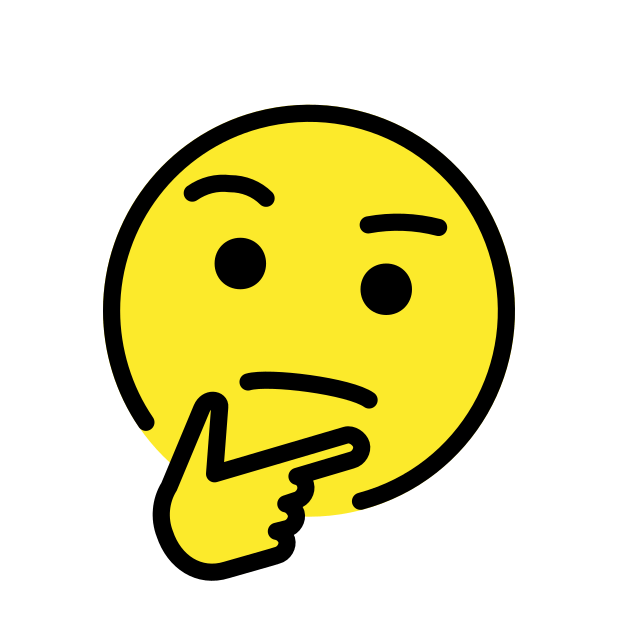

- Which emoji best defines you?
- 
- Get Started
-
1. You come back home from a long day. How do
you want to spend your Friday evening?
- Going out to a social environment
- Staying in by myself
-
2. In a classroom setting, would you rather
- Participate in a lively discussion
- Listen to an interesting lecture
-
3. You feel more yourself when you’re:
- The center of attention
- In the background
-
4. Do you prefer subjects that offer practical application or logical theory?
- Application
- Theory
-
5. What do you value more?
- Process
- Result
-
6. What is the main reason for your success?
- Passion
- Ideas and skills
-
7. What do you notice more in a difficult conversation with a family or a friend?
- How the person says it
- What the person says
-
8. How do people persuade you?
- Emotional appeal
- Logical reasoning
-
9. Which of these qualities suits your personality?
- Emphathetic
- Blunt
-
10. You make decisions based on:
- Gut feeling
- Concrete evidence
-
11. How do you carry out a project?
- Going with the flow
- Having a solid plan
-
12. I like to
- Inquire
- Organize